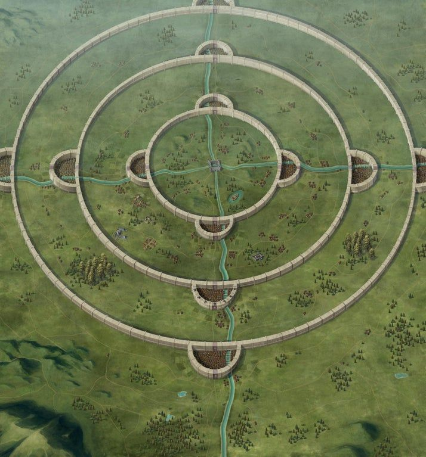

SHINGEKI NO KYOJIN

MURALLAS
Muro Maria
Muro María: Es la pared más externa. Al igual que las otras, se encuentra a unos 50m de altura. Cien años después, fue destruida debido al repentino ataque del Titán Colosal.
Muro Rose
Muro Rose: Es el muro intermedio. La distancia entre la primera es de 100km, y con la tercera de 130km. Cinco años después el Titán Colosal intento tirarla pero no tuvo éxito alguno.
Muro Sina
Muro Sina: Es la muralla más interna y tiene como principal objetivo proteger el reino. La ciudad en el interior de la Muralla Sina está custodiada por la Policía Militar ya que tiene como objetivo la protección del rey.
CRONOLOGIA
Año 738 En esta fecha se confirma el surgimiento de los Titanes, causando la aniquilación de más de la mitad de la humanidad.
Año 745 La raza humana sobrevive construyendo tres murallas. Los Titanes son incapaces de penetrar en la ciudad, la población humana puede disfrutar de un siglo de paz.
Año 845 El Titán Colosal, de aproximadamente 60m, destruye parte del Muro María de un solo golpe, lo que permite a los Titanes menores invadir el territorio humano causando pérdidas irreparables.
Año 846 La población humana se pone en marcha en una ofensiva militar para retomar el Muro María. En este período se recauda una gran cantidad de información acerca de cómo exterminar a los Titanes.
Año 847 Eren, Mikasa y Armin comienzan su entrenamiento militar, y tras muchas dificultades pasan la prueba.
Año 850 Ya han pasado más de 5 años después de último ataque. La humanidad empieza su contraofensiva; Eren, en compañía del escuadrón, luchan para evitar que la esta se extinga, sin embargo, los Titanes vuelen al ataque.